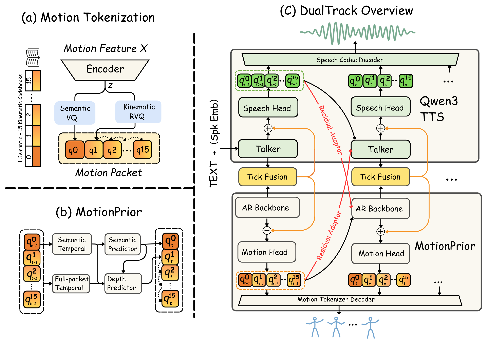

Represent motion.
A SeMoCo-based tokenizer represents body and finger motion with one semantic code and fifteen kinematic codes per packet.
SPEECH + GESTURE · ONE SHARED CLOCK
DualTrack couples pretrained speech and motion priors through bidirectional history exchange and Tick Fusion to generate synchronized speech and expressive body and finger gestures.
WATCH & COMPARE
GT · GELINA · DualTrack
Front and side skeleton views with audio.
GT (ground truth) and DualTrack cover all 43 samples. GELINA is available for the 28 English/Spanish samples. Play one clip at a time to hear its corresponding speech.
HOW IT WORKS

A SeMoCo-based tokenizer represents body and finger motion with one semantic code and fifteen kinematic codes per packet.
Semantic and full-packet histories guide the next semantic code, then a depth predictor completes the kinematic codes.
Residual adapters exchange past packets. Tick Fusion coordinates current states before speech and motion packets are predicted in parallel.
Samples. 22 English, 6 Spanish, 9 Chinese, and 6 Japanese BEAT2 recordings. GT uses the original motion and recording; DualTrack uses a reference speaker embedding. GELINA does not support these Chinese/Japanese inputs.
Skeleton views. Every clip shows front and side views at a shared scale within each sample. DualTrack uses its native SOMA77 skeleton; GT and GELINA use SMPL-X55. The videos retain their corresponding audio and original durations, without time stretching.